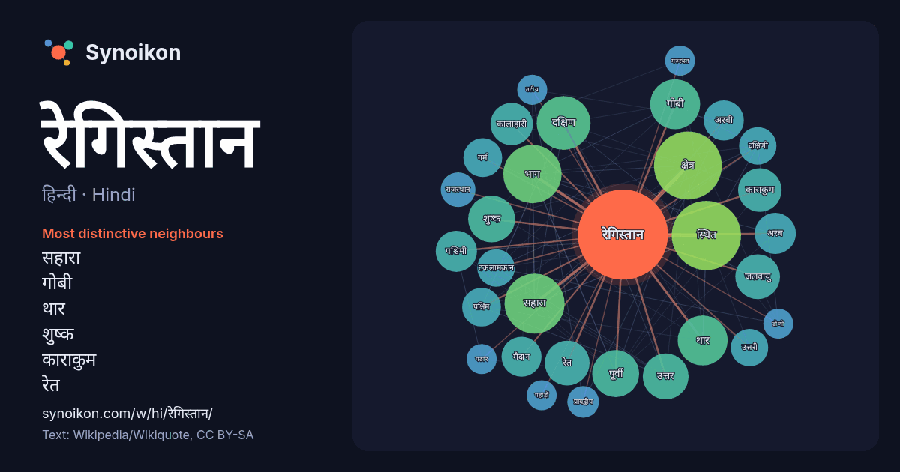

हिन्दी · Hindi · word of the day list
रेगिस्तान
“desert” · The words found around it in 711 instances from Hindi Wikipedia, Wikiquote.

Most distinctive neighbours
- सहारा 32×
- गोबी 26×
- थार 25×
- शुष्क 21×
- काराकुम 20×
- रेत 20×
- कालाहारी 19×
- जलवायु 16×
- टकलामकान 15×
- अरबी 14×
- पूर्वी 14×
- गर्म 13×
- अरब 13×
- मैदान 13×
- दक्षिण 12×
- स्थित 12×
- पश्चिमी 11×
- दक्षिणी 10×
- प्रायद्वीप 10×
- भाग 10×
× = how many times more often than in general Hindi Wikipedia text.
Most frequent neighbours
- स्थित 48
- क्षेत्र 46
- सहारा 36
- भाग 34
- दक्षिण 29
- गोबी 25
- थार 25
- पूर्वी 22
- शुष्क 22
- उत्तर 21
- जलवायु 20
- रेत 20
- काराकुम 19
- कालाहारी 18
- क्षेत्रों 18
- अरब 17
- पश्चिमी 17
- अरबी 16
- मैदान 16
- हिस्सा 16
In context
- मरुस्थल या रेगिस्तान एक अनुर्वर क्षेत्र का भूदृश्य है जहाँ कम वर्षण होती है और इसके परिणाम स्वरूप, रहने की स्थिति पौधे और पशु जीवन के लिए प्रतिकूल होती Wikipedia snippets · मरुस्थल
- अरबी रेगिस्तान (अंग्रेज़ी: Arabian Desert; अरबी: ur, अस-सहरा अल-अरबीया) पश्चिमी एशिया में स्थित एक विशाल रेगिस्तान है जो दक्षिण में यमन से लेकर उत्तर Wikipedia snippets · अरबी रेगिस्तान
- काराकुम रेगिस्तान (तुर्कमेन: Garagum; रूसी: Каракумы; अंग्रेज़ी: Karakum) मध्य एशिया में स्थित एक रेगिस्तान है। तुर्कमेनिस्तान देश का ७०% इलाक़ा इसी रेगिस्तान Wikipedia snippets · काराकुम रेगिस्तान
- अद-दहना (अरबी: ur, सहरा अद-दहना ; अंग्रेज़ी: Ad-Dahna) अरबी रेगिस्तान का मध्य हिस्सा है। इसका अकार एक गलियारे के रूप का है - यह केवल २५-५० किमी की चौड़ाई Wikipedia snippets · अद-दहना रेगिस्तान
- अंग्रेज़ी: An-Nafud) या अल-नफ़ूद या नफ़ूद अरबी प्रायद्वीप में स्थित एक बड़ा रेगिस्तान है। इसका क्षेत्रफल १,०३,००० वर्ग किमी है, यानि लगभग भारत के बिहार राज्य Wikipedia snippets · अन-नफ़ूद रेगिस्तान
- कोहरा रेगिस्तान या कोहरा मरुभूमि (fog desert) ऐसे रेगिस्तान को कहते हैं जहाँ पड़ने वाला अधिकतर जल कोहरे द्वारा पहुँची नमी से आता है। ऐसे क्षेत्रों में Wikipedia snippets · कोहरा रेगिस्तान
- विशाल रेगिस्तान है। सहारा रेगिस्तान की भांति ही इस रेगिस्तान को भी तीन भागों में विभक्त किया जा सकता है- 1. ताकला माकन रेगिस्तान 2. अलशान रेगिस्तान 3. मुअस Wikipedia snippets · गोबी मरुस्थल
- एशिया में स्थित एक रेगिस्तान है। इसका क्षेत्रफल २,९८,००० वर्ग किमी (१,१५,००० वर्ग मील) है और यह दुनिया का ११वाँ सबसे बड़ा रेगिस्तान है। यह आमू दरिया और Wikipedia snippets · किज़िल कुम रेगिस्तान
More Hindi words
- इतिहास
- ईश्वर
- कार्य
- कुत्ता
- गर्मी
- गाना
- घंटी
- घड़ी
- घोड़ा
- चाय
- चित्रकला
- छाया
- जंगल
- जलवायु
- जीवन
- तूफ़ान
- दर्पण
- द्वीप
- नक्षत्र
- नमक
- परिवार
- पहाड़
- पानी
- पैसा
- प्रकृति
- बगीचा
- बिल्ली
- भाषा
- भोजन
- माता
- मानचित्र
- मृत्यु
- मौन
- रेलगाड़ी
- रोटी
- वर्षा
- विज्ञान
- शक्ति
- शरद
- शहद
- शहर
- सड़क
- सत्य
- समय
- सर्दी
- सेतु
- स्वर्ण
- स्वास्थ्य
- हृदय
Precomputed on 2026-10-09 with default settings (±5 words, medium corpus). The interactive map can refresh it with live data.